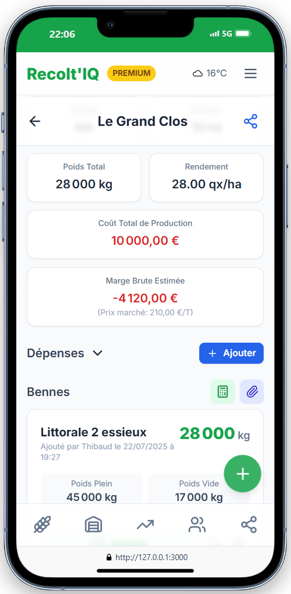
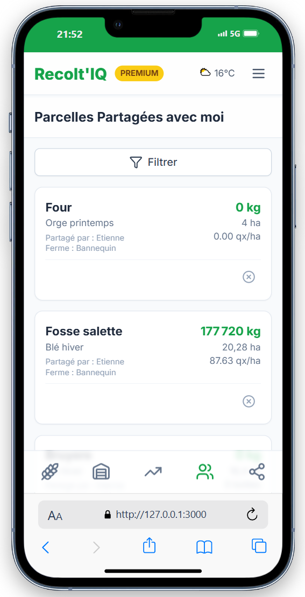

Moins de carnets, plus de certitudes.
La solution de gestion agricole tout-en-un qui transforme votre smartphone en centre de commandement. Gérez, analysez et optimisez chaque récolte, du champ au stockage.
Une application pensée pour votre quotidien
Découvrez comment chaque outil de Recolt'IQ répond à un besoin précis sur le terrain, de la traçabilité des récoltes à l'analyse financière.
Gestion des Récoltes et des Parcelles
Centralisez toutes les informations de vos parcelles et suivez l'avancement de vos récoltes avec une précision inégalée.
- Création et gestion des parcelles : Ajoutez vos champs, leur surface, culture et ferme d'appartenance.
- Suivi des pesées : Enregistrez chaque benne avec poids brut, tare et poids net.
- Estimation de poids : Calculez un poids estimé fiable basé sur le volume, la densité et le remplissage.
- Gestion de la paille : Suivez le ramassage en comptabilisant bottes et poids.
- Suivi qualitatif : Ajoutez humidité, protéines et poids spécifique (PS) pour chaque benne.


Analyse et Données
Transformez vos données brutes en informations précieuses pour prendre les meilleures décisions.
- Tableau de bord central : Une vue d'ensemble de vos récoltes, stocks et performances financières.
- Analyse financière par parcelle : Suivez dépenses et ventes pour calculer votre marge brute.
- Météo agricole intégrée : Accédez à des prévisions détaillées pour planifier votre travail.
- Export de données complet : Exportez tout au format Excel pour votre comptabilité.
Collaboration et Partage
Travaillez en équipe sans effort. Partagez l'accès à vos parcelles avec vos employés, chauffeurs ou partenaires.
- Partage de parcelles sécurisé : Invitez vos collaborateurs via un simple lien ou par leur identifiant.
- Gestion des droits d'accès : Choisissez si l'invité peut consulter (lecture) ou modifier (écriture).
- Synchronisation en temps réel : Les informations ajoutées par un collaborateur sont visibles instantanément.

Né d'un besoin, conçu pour les agriculteurs.
Je suis Thibaud Lescroart, fils d'agriculteur. Recolt'IQ est né d'une frustration personnelle : voir mon père jongler avec des carnets illisibles, des feuilles volantes et des tableurs complexes pendant la moisson, la période la plus stressante de l'année.
Ma mission est devenue claire : créer un outil numérique qui soit à la fois puissant et incroyablement simple à utiliser sur le terrain. Un véritable carnet de plaine numérique, mais intelligent.
Je crois que la technologie doit servir l'agriculture, et non l'inverse. C'est pourquoi je développe Recolt'IQ main dans la main avec une communauté d'agriculteurs pour m'assurer que chaque fonctionnalité répond à un vrai besoin, sans superflu.
Ils ont adopté Recolt'IQ
Découvrez ce que les agriculteurs pensent de notre solution pour leur gestion agricole.
Chargement des avis...
L'application Android est disponible !
Testez notre application native pour une expérience rapide même sans connexion internet. Vos données se synchronisent automatiquement.
Note : Vous devrez peut-être autoriser l'installation d'applications de sources inconnues.
Complètement Gratuit. Pour Tout le Monde.
Recolt'IQ est 100% gratuit, sans aucune limitation. Profitez de toutes les fonctionnalités dès maintenant et pour toujours.
Questions fréquentes
Trouvez les réponses à vos questions sur notre logiciel agricole.
L'application fonctionne-t-elle sans connexion internet ?
Oui, Recolt'IQ est une Progressive Web App (PWA) conçue pour fonctionner hors-ligne. Vous pouvez ajouter des parcelles et des pesées même au milieu d'un champ sans réseau. Les données se synchroniseront automatiquement dès que votre appareil retrouvera une connexion.
Comment fonctionne l'estimation de poids ?
Notre outil d'estimation utilise une formule qui prend en compte le volume de votre benne (en m³), la densité de la culture (PS en kg/hL), un coefficient de tassement propre à chaque culture, et le niveau de remplissage que vous indiquez. Cela vous donne une estimation très fiable avant même le passage sur un pont-bascule.
Est-ce que l'application est disponible sur iPhone et Android ?
Oui. Recolt'IQ est une application web progressive, ce qui signifie qu'elle fonctionne sur n'importe quel appareil doté d'un navigateur moderne (Chrome, Safari, Firefox...). Vous pouvez l'installer sur l'écran d'accueil de votre iPhone ou de votre téléphone Android pour une expérience identique à une application native, sans passer par un magasin d'applications.
Comment fonctionne le partage de parcelles ?
Vous pouvez inviter un collaborateur (chauffeur, employé, etc.) à accéder aux données d'une ou plusieurs parcelles via un lien sécurisé ou son identifiant Recolt'IQ. Pour chaque partage, vous décidez s'il peut simplement voir les informations (lecture seule) ou s'il peut aussi en ajouter ou en modifier, ce qui est parfait pour un chauffeur qui doit enregistrer ses propres pesées.